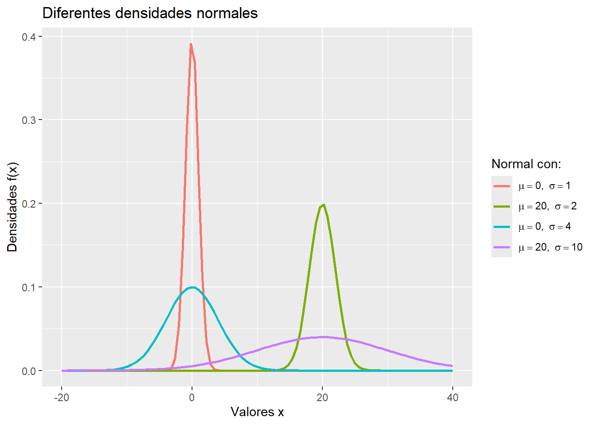
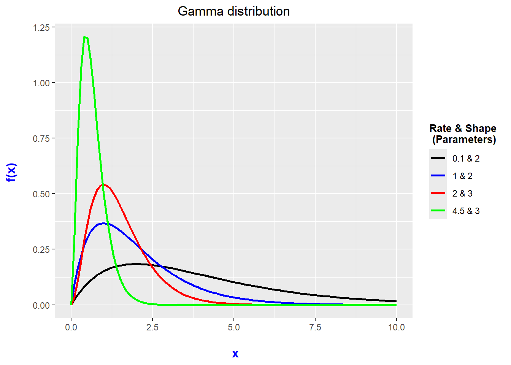

| Distribución | Función de probabilidad | Parámetros | E(X) | V(X) |
|---|---|---|---|---|
| Uniforme | $$f(x_k)=\frac{1}{n},\quad k=1,\ldots,n$$ | $$x_1\lt\cdots\lt x_n,\quad n\in\mathbb{N}$$ | $$\frac{1}{n}\sum_{k=1}^n x_k$$ | $$\frac{1}{n}\sum_{k=1}^n x_k^2-\left(\frac{1}{n}\sum_{k=1}^n x_k\right)^2$$ |
| De dos puntos | $$f(x_1)=p,\quad f(x_2)=1-p$$ | $$x_1\lt x_2,\quad 0\lt p\lt 1$$ | $$x_1p+x_2(1-p)$$ | $$(x_1-x_2)^2p(1-p)$$ |
| Bernoulli | $$f(0)=1-p,\quad f(1)=p$$ | $$0\lt p\lt 1$$ | $$p$$ | $$p(1-p)$$ |
| Binomial | $$f(k)=\binom{n}{k}p^k(1-p)^{n-k}$$ | $$0\lt p\lt 1,\quad n\in\mathbb{N}$$ | $$np$$ | $$np(1-p)$$ |
| Poisson | $$f(k)=\frac{e^{-\lambda}\lambda^k}{k!}$$ | $$\lambda\gt 0$$ | $$\lambda$$ | $$\lambda$$ |
| Hipergeométrica | $$f(k)=\frac{\binom{M}{k}\binom{N-M}{n-k}}{\binom{N}{n}}$$ | $$M\leq N,\quad n\leq N$$ | $$n\frac{M}{N}$$ | $$n\frac{M}{N}\left(1-\frac{M}{N}\right)\left(\frac{N-n}{N-1}\right)$$ |
| Binomial negativa | $$f(k)=\binom{k+r-1}{r-1}p^r(1-p)^k$$ | $$r\gt 0,\quad 0\lt p\lt 1$$ | $$\frac{r(1-p)}{p}$$ | $$\frac{r(1-p)}{p^2}$$ |
| Geométrica | $$f(k)=p(1-p)^k$$ | $$0\lt p\lt 1$$ | $$\frac{1-p}{p}$$ | $$\frac{1-p}{p^2}$$ |
TEORÍA DE PROBABILIDAD (con R)
Teorema de transformación (univariado)

About these lecture notes. These notes study transformations of random variables, associated density functions and relationships among probability distributions, with examples and exercises in R.
1 Distribuciones especiales
1.0.1 Discretas
Uniforme discreta, de Bernoulli, binomial, de Poisson, hipergeométrica, binomial negativa, geométrica, de Polya, multinomial, etc.
En la tabla de abajo se presenta un resumen de las distribuciones discretas más importantes.
1.0.2 Continuas
Uniforme continua, normal, gamma, exponencial, \(t\) de Student, Chi-cuadrada, \(F\) de Fisher, Cauchy, Beta, de Laplace, Log-normal, de Rayleigh, Weibull, de Maxwell, del valor extremo, etc.
En la tabla de abajo se presenta un resumen de las distribuciones continuas más importantes.
| Distribución | Función de densidad | Parámetros | E(X) | V(X) |
|---|---|---|---|---|
| Uniforme | $$f(x)=\frac{1}{b-a},\quad a\lt x\lt b$$ | $$a\lt b$$ | $$\frac{a+b}{2}$$ | $$\frac{(b-a)^2}{12}$$ |
| Normal | $$f(x)=\frac{1}{\sqrt{2\pi\sigma^2}}e^{-\frac{(x-\mu)^2}{2\sigma^2}}$$ | $$\mu\in\mathbb{R},\quad \sigma^2\gt 0$$ | $$\mu$$ | $$\sigma^2$$ |
| Normal estándar | $$f(x)=\frac{1}{\sqrt{2\pi}}e^{-x^2/2}$$ | $$x\in\mathbb{R}$$ | $$0$$ | $$1$$ |
| Gamma | $$f(x)=\frac{x^{\alpha-1}e^{-x/\beta}}{\beta^\alpha\Gamma(\alpha)}$$ | $$\alpha\gt 0,\quad \beta\gt 0$$ | $$\alpha\beta$$ | $$\alpha\beta^2$$ |
| Exponencial | $$f(x)=\lambda e^{-\lambda x},\quad x\gt 0$$ | $$\lambda\gt 0$$ | $$\frac{1}{\lambda}$$ | $$\frac{1}{\lambda^2}$$ |
| t de Student | $$f(x)=\frac{\Gamma((n+1)/2)}{\sqrt{n\pi}\Gamma(n/2)}\left(1+\frac{x^2}{n}\right)^{-(n+1)/2}$$ | $$n\in\mathbb{N}$$ | $$0,\quad n\gt 1$$ | $$\frac{n}{n-2},\quad n\gt 2$$ |
| Chi-cuadrada | $$f(x)=\frac{x^{n/2-1}e^{-x/2}}{2^{n/2}\Gamma(n/2)}$$ | $$n\gt 0$$ | $$n$$ | $$2n$$ |
| F de Fisher | $$f(x)=\frac{\Gamma((m+n)/2)}{\Gamma(m/2)\Gamma(n/2)}\frac{(m/n)^{m/2}x^{m/2-1}}{(1+mx/n)^{(m+n)/2}}$$ | $$m,n\in\mathbb{N}$$ | $$\frac{n}{n-2},\quad n\gt 2$$ | $$\frac{2n^2(m+n-2)}{m(n-2)^2(n-4)},\quad n\gt 4$$ |
2 Distribución de funciones de variables aleatorias
2.0.1 Teorema de transformación (univariado)
Es importante anotar que si \(g\) es una función continua y \(X\) es una variable aleatoria, entonces, \(g(X)\) también es una variable aleatoria. Por esta razón, queremos expresar, para algunas funciones especiales \(f\), la función de distribución de \(Y:=g(X)\) a través de la función de distribución de \(X\).
Theorem 1 (Transformación) Sea \(X\) una variable aleatoria continua con densidad de probabilidad \(f_X\). Si \(g:\mathbb{R}\to \mathbb{R}\) es continuamente diferenciable sobre \(\mathbb{R}\) y \(g(x)\ne 0\) para todo \(x\in\mathbb{R}\), entonces la función de densidad de la variable \(Y=g(X)\) está dada por \[f_Y(x)= \left\{ \begin{array}{ll} f_X\big(h(x)\big)|h'(x)|, & \hbox{para todo $x$ en el rango de $g$;} \\ 0, & \hbox{de otro modo} \end{array} \right. \]
siendo \(h:=g^{-1}\) la inversa de \(g\).
Proof:
Se deja al lector. \(\blacksquare\)
2.0.2 Relaciones entre algunas distribuciones
Theorem 2 (Normal) Si \(X\) tiene distribución normal con parámetros \(\mu\) y \(\sigma^2\), es decir, \(X \stackrel{\atop d}{=} \mathcal{N}(\mu,\sigma^2)\), entonces,\(aX+b \stackrel{\atop d}{=} \mathcal{N}(a\mu+b, a^2\sigma^2)\), para todo \(a,b\in\mathbb{R}\).
Proof:
Como ejercicio. Aplicar el teorema Theorem 1. \(\blacksquare\)
A continuación, vemos algunas distribuciones normales.

Theorem 3 (Normal estándar) \(X\stackrel{\atop d}{=} \mathcal{N}(\mu,\sigma^2)\) si y sólo si \(\frac{X-\mu}{\sigma}\stackrel{\atop d}{=} \mathcal{N}(0,1)\).
Proof:
Como ejercicio. Aplicar el teorema Theorem 1. \(\blacksquare\)
Theorem 4 (Gamma) Sea \(X\) una variable aleatoria real. Sea \(\gamma\big(\alpha, \beta\big)\)la distribución gamma con parámetros\(\alpha\) y \(\beta\).
Si \(X \stackrel{\atop d}{=} \mathcal{N}(0,\sigma^2)\), entonces, \(X^2 \stackrel{\atop d}{=} \gamma\big(\frac{1}{2}, 2\sigma^2\big)\).
Si \(X \stackrel{\atop d}{=}\gamma(\alpha,\beta)\), entonces, \(cX \stackrel{\atop d}{=} \gamma(\alpha, c \,\beta)\), para todo \(c>0\).
Proof:
Como ejercicio. Aplicar el teorema Theorem 1. \(\blacksquare\)
A continuación, vemos algunas distribuciones gammas.

Theorem 5 (Chi-cuadrada) Supongamos que \(\chi^2 (n)\) representa la distribución chi-cuadrada con \(n\) grados de libertad.
\(\chi^2(n)=\gamma\left(\frac{n}{2}, 2\right)\).
Si \(X\stackrel{\atop d}{=} \mathcal{N}(0,1)\), entonces, \(X^2\stackrel{\atop d}{=} \chi^2(1)\).
Proof:
Como ejercicio. En la parte (b) aplicar el teorema Theorem 1. \(\blacksquare\)
A continuación, vemos algunas distribuciones chi-cuadradas.

3 Ejercicios
Realizar los ejercicios que se indican abajo.
3.0.1 Ejercicio 1
Sea \(\Omega=\{1,2\}\) y \(\mathbb{F}\) el conjunto potencia de \(\Omega\). Demuestre que la siguiente aplicación \(P\) definida sobre \(\mathbb{F}\) es una medida de probabilidad: \[P(A)=\left\{ \begin{array}{ll} 0, & \hbox{si $A=\emptyset$;} \\ 1/3, & \hbox{$A=\{1\}$;} \\ 2/3, & \hbox{A=\{2\};} \\ 1, & \hbox{A=\{1,2\}.} \end{array} \right. \]
3.0.2 Ejercicio 2
Sea \(\Omega=\{1,2,3\}\) y \(\mathbb{F} =\{\emptyset, \Omega, \{2\}, \{1,3\}\}\). Demuestre que los eventos \(\emptyset\) y \(\{3\}\) son eventos nulos y verifique que \(P\) es una medida de probabilidad, donde \(P\) está definida sobre \(\mathbb{F}\) como: \[P(A)=\left\{ \begin{array}{ll} 0, & \hbox{si $2\not\in A$;} \\ 1, & \hbox{si $2\in A$} \end{array} \right. \]
3.0.3 Ejercicio 3
Sea el conjunto
\[ B=\left\{x\in\mathbb{N}\ \middle|\ 68-x^2\geq 0 \; \text{ y }\; \frac{1}{4}t^2-t+7-x+\sqrt{68-x^2}\geq 0 \; \text{ para todo }t\in\mathbb{R} \right\}, \]
donde \(\mathbb{N}=\{0,1,2,\ldots\}\). Se extraen al azar tres elementos de \(B\), uno a uno y sin reemplazo. En el orden de extracción, estos elementos ocupan las posiciones de las centenas, las decenas y las unidades.
El cero en la posición de las centenas invalida el resultado, porque el número formado tendría menos de tres cifras. Por ejemplo, escribir \(020\) equivale a escribir \(20\). Un ejemplo con cifras distintas, acorde con la extracción sin reemplazo, es \(027\), que representa el número \(27\).
Determine los elementos de \(B\). Luego, aplique técnicas de conteo para calcular cuántos números válidos de tres cifras se pueden formar y cuántos de ellos son estrictamente menores que \(368\). Para este último conteo, organice los casos según la cifra de las centenas.
Dado que se formó un número válido de tres cifras, calcule la probabilidad de que sea estrictamente menor que \(368\). Justifique por qué los números válidos son equiprobables.
3.0.4 Ejercicio 4
En cierta ciudad, el 70% de todas las personas examinadas en cierto consultorio odontológico no tienen caries. Si se supone que personas sucesivas tienen o no tienen caries (por supuesto, independientemente una de otra), calcule la probabilidad de los siguientes eventos:
Las tres personas siguientes examinadas tienen caries.
Al menos una de las tres personas siguientes examinadas no tienen caries.
Exactamente una de las tres personas siguientes examinadas no tiene caries.
A lo más una de las tres personas siguientes examinadas no tiene caries.
Al menos una de las tres personas siguientes examinadas tiene caries.
Las tres personas siguientes examinadas tienen caries sabiendo que al menos una de ellas tiene caries.
3.0.5 Ejercicio 5
Sea \(\Omega \ne \emptyset\) y \(\mathbb{F}\) una \(\sigma\)-álgebra en \(\Omega\). Para \(A\), \(B\), \((A_n)_{n\in\mathbb{N}}\), \((B_n)_{n\in\mathbb{N}}\in\mathbb{F}\) demuestre las siguientes propiedades que satisface una medida de probabilidad:
\(P(\emptyset)=0\).
Aditividad: Si los eventos \(A_i\), para \(i=1, \ldots, n\), son disyuntos dos a dos, entonces, \(P\left(\bigcup\limits_{i=1}^n A_i \right) = \sum\limits_{i=1}^n P(A_i)\).
\(P(\overline {A})= 1- P(A)\).
Monotonía: Si \(A\subseteq B\), entonces, \(P(A)\leq P(B)\). En especial, \(P(A)\leq 1\).
Teorema de adición para 2 eventos o fórmula de Silvester: \[P(A\cup B)= P(A) + P(B) - P(A\cap B)\]
3.0.6 Ejercicios del 6 al 9
- Teorema de la probabilidad total. Sea dada una descomposición finita o enumerable \(A_1,A_2,\ldots\) de \(\Omega\), es decir, \(A_1, A_2, \ldots \in\mathbb{F}\) son disyuntos dos a dos y \(\bigcup\limits_{n=1}^\infty A_n=\Omega\). Entonces, para cada \(B\in\mathbb{F}\), se tiene que \[P(B)=\sum\limits_{n=1}^\infty P(B/A_n)\, P(A_n)\]
- Teorema o regla de Bayes. Sea \(A_1, A_2,\ldots\)una descomposición finita o enumerable de\(\Omega\). Entonces, para cada evento \(B\) con \(P(B)>0\) y para todo \(j\in\mathbb{N}\), se tiene \[P(A_j/B)=\frac{P(B/A_j)\, P(A_j)}{\sum\limits_{n=1}^\infty P(B/A_n) \, P(A_n)}\]
- Se sabe que en un grupo de cuatro componentes hay dos defectuosos. Una inspectora los prueba de uno en uno hasta encontrar las dos piezas defectuosas. Una vez que las localiza interrumpe las pruebas, pero examina la segunda pieza defectuosa por seguridad. Si \(X\) es el número de pruebas en la que se detecta la segunda pieza defectuosa, determine la función de probabilidad de \(X\).
- Para verificar la exactitud de sus estados financieros, las empresas a menudo emplean auditores que verifiquen sus ingresos. Los empleados de la empresa se equivocan al registrar los ingresos 5% de las veces. Suponga que un auditor revisa aleatoriamente tres ingresos y que la detección de los errores es independiente. Determine la función de probabilidad del número de errores detectado por el auditor.
3.0.7 Ejercicio 10
Se lanzan dos dados perfectos y se define la variable aleatoria \(X\) de la siguiente manera: \[X=\left\{ \begin{array}{ll} 2.000, & \hbox{si resultan 6 en ambos;} \\ 100, & \hbox{si resulta 6 sólo en uno;} \\ 0, & \hbox{si no resulta 6 en ninguno.} \end{array} \right.\]
Calcule las tres probabilidades que determinan la distribución de \(X\).
Calcule la esperanza de \(X\).
Supóngase que este experimento representa un juego, en el cual los valores de \(X\) significan la ganancia (en pesos) del jugador y donde el jugador tiene que pagar 100 (pesos) antes. Interprete el valor de \(E(X)\).
3.0.8 Ejercicio 11
Responda las siguientes preguntas. Explique.
Si \(A\), \(B\) y \(C\) son mutuamente excluyentes, ¿es posible que \(P(A)=0,3\), \(P(B)=0,4\) y \(P(C)=0,5\)?
Si \(P(A/B)=1\), ¿se cumple \(A=B\)?
Si \(A\) y \(B\) son eventos mutuamente excluyentes, ¿es posible construir un diagrama de Venn que contenga a los tres eventos \(A\), \(B\) y \(C\), tales que \(P(A/C)=1\) y \(P(B/C)=0\)?
3.0.9 Ejercicio 12
Sea \(X\) una variable aleatoria que tiene distribución exponencial con parámetro \(\lambda >0\).
Demuestre que su función de densidad \(f\) es realmente una densidad.
Encuentre una fórmula (y demuéstrela) para los valores \(F(t)\) de la función de distribución acumulada \(F\) y para \(P(X\geq t)\).
Con base en el inciso anterior, halle \(F(-3)\) y \(P(X\geq -3)\).
Demuestre que \(P(X\geq x+z \, /\, X\geq x) = P(X\geq z)\), para todo \(x, z >0\).
3.0.10 Ejercicio 13
Demuestre las siguientes afirmaciones:
Para cualquier evento \(A\) y \(B\) con \(P(B)>0\) se cumple que \(P(A/B) + P(\overline{A}/B) = 1\).
Si \(P(B/A) > P(B)\), entonces \(P(\overline{B}/A) <P(\overline{B})\). Sugerencia: Sume\(P(\overline{B}/A)\) ambos lados de la desigualdad y use el resultado de la parte (a).
Para cualquiera de los tres eventos \(A\), \(B\) y \(C\) con \(P(C)>0\) se cumple que \[P(A\cup B /C) = P(A/C) + P(B/C) - P(A\cap B/C)\]
3.0.11 Ejercicio 14
En un grupo de cuatro piezas hay dos defectuosas. Una inspectora las prueba de una en una hasta encontrar las dos piezas defectuosas. Una vez que las localiza interrumpe las pruebas, pero examina la segunda pieza defectuosa por seguridad. Si \(X\) es el número de pruebas en la que se detecta la segunda pieza defectuosa, determine la función de probabilidad de \(X\).
3.0.12 Ejercicio 15
El tiempo de vida de un neumático puede representarse mediante una distribución normal con media 35000 kilómetros y desviación estándar de 4000 kilómetros.
Halle la probabilidad de que el tiempo de un neumático sea más de 30000 kilómetros.
Halle el valor de \(k\) tal que la probabilidad de que el tiempo de vida de un neumático sea menor que \(k\) es 0.95.
Se toma una muestra de 80000 de estos neumáticos. ¿Aproximadamente cuántos tienen un tiempo de vida superior a los 38000 kilómetros?
Se toma una muestra de 5 de estos neumáticos. ¿Cuál es la probabilidad (aproximada) de que entre 1 (inclusive) y 4 (no inclusive) de ellos tengan un tiempo de vida inferior a los 40000 kilómetros?
3.0.13 Ejercicios del 16 al 19
- Si \(A\) y \(B\) son independientes, demuestre que también lo son: (a) \(\overline{A}\) y \(B\); (b) sus complementos.
- Demostrar el teorema Theorem 3.
- Demostrar el teorema Theorem 4.
- Demostrar el teorema Theorem 5.
3.0.14 Ejercicio 20
Sea \(X\) una variable aleatoria real que tiene distribución exponencial con parámetro \(\lambda\). Hallar la correspondiente densidad de la variable aleatoria \(Y=3X\). Hágalo de dos maneras:
Aplicando el teorema de transformación Theorem 1.
Calculando directamente la función de distribución acumulada \(F_Y(y) = P(Y \leq y)\), sin aplicar el teorema.
3.0.15 Ejercicio 21
Sea \(X\) una variable aleatoria real que tiene distribución exponencial con parámetro \(\lambda\). Hallar la correspondiente densidad de la variable aleatoria \(Y=X^2\). Hágalo de dos maneras:
Aplicando el teorema de transformación Theorem 1.
Calculando directamente la función de distribución acumulada \(F_Y(y) = P(Y \leq y)\), sin aplicar el teorema.
3.0.16 Ejercicio 22
Halle la densidad de \(Y=X^2\) si \(X\) es una variable aleatoria real con función de densidad dada por \[ f(x) = \frac{1}{\sqrt{2\pi}}e^{-x^2/2}, \quad x\in \mathbb{R}\]
3.0.17 Ejercicios del 23 al 27
- Distribución de \(Y=aX+b\) (caso discreto). Si \(X\) es una variable aleatoria discreta con función de distribución acumulada \(F_X\) y de probabilidad \(f_X\), entonces las siguientes funciones \(g:\mathbb{R}\to \mathbb{R}\) definen las variables aleatorias \(Y=g(X)\) con las funciones de distribución acumulada \(F_Y\) y de probabilidad \(f_Y\). Si \(Y=aX + b\) para todo \(a,b\in\mathbb{R}\), \(a\ne 0\), demuestre que \(f_Y(k)=f_X\big(\frac{k-b}{a}\big)\) para todo \(k\in \mathbb{R}\) y
\[F_Y(t)= \begin{cases} F_X\big(\frac{t-b}{a}\big) & \text{si $a>0$} \\ 1- F_X\big(\frac{t-b}{a}\big) + f_X\big(\frac{t-b}{a}\big) & \text{si $a<0$} \end{cases}\]
- Sea \(X\) una variable aleatoria que tiene función de probabilidad \(f_X\) dada por \(f_X(k) = {2\choose k} (0,3)^k(0,7)^{2-k}\), donde \(k\in \mathbb{N}\) y \(0\leq k\leq 2\). Si \(Y=2X\), encuentre: (a) La función de probabilidad \(f_Y\) de \(Y\); (b) La función de distribución acumulada \(F_Y\) de \(Y\).
- Distribución de \(Y=aX+b\) (caso continuo). Si \(X\) es una variable aleatoria continua con función de distribución \(F_X\) y densidad de probabilidad \(f_X\), entonces las siguientes funciones \(g:\mathbb{R}\to \mathbb{R}\) definen las variables aleatorias \(Y=g(X)\) con la función de distribución \(F_Y\) y de densidad de probabilidad \(f_Y\). Si \(Y=aX + b\) para todo \(a,b\in\mathbb{R}\), \(a\ne 0\), aplique el teorema de transformación para demostrar que \(f_Y(y)= \frac{1}{|a|}f_X\big(\frac{y-b}{a}\big)\) y \[F_Y(t)= \begin{cases} F_X\big(\frac{t-b}{a}\big) & \text{si $a>0$} \\ 1- F_X\big(\frac{t-b}{a}\big) & \text{si $a<0$} \end{cases}\]
- Resuelva nuevamente el ejercicio 25, calculando primero \(F_Y\) y luego \(f_Y\).
- Repita el ejercicio 25, pero ahora \(X\) tiene distribución exponencial con parámetro 2.
3.0.18 Ejercicios del 28 al 31
- Distribución de \(Y=aX^2\) para \(a>0\) (caso discreto). Si \(X\) es una variable aleatoria discreta con funciones de distribución \(F_X\) y de probabilidad \(f_X\), entonces las siguientes funciones \(g:\mathbb{R}\to \mathbb{R}\)definen las variables aleatorias\(Y=g(X)\) con la funciones de distribución \(F_Y\) y de probabilidad \(f_Y\). Si \(Y=a\,X^2\) para una constante \(a> 0\), demuestre que \[f_Y(k)= \begin{cases} 0, & \text{$k< 0$} \\ f_X(0), & \text{$k= 0$} \\ f_X(\sqrt{k/a}) + f_X(-\sqrt{k/a}), & \text{$k> 0$} \end{cases}\]
\[ F_Y(t)= \begin{cases} 0 & \text{$t< 0$} \\ f_X(0), & \text{$t= 0$} \\ F_X(\sqrt{t/a}) - F_X(-\sqrt{t/a}) + f_X(-\sqrt{t/a}), & \text{$t> 0$} \end{cases}\]
- Repita el ejercicio 28, pero ahora \(Y=2X^2\).
- Distribución de \(Y=aX^2\) para \(a<0\) (caso discreto). Si \(X\) es una variable aleatoria discreta con funciones de distribución \(F_X\) y de probabilidad \(f_X\), entonces las siguientes funciones \(g:\mathbb{R}\to \mathbb{R}\) definen las variables aleatorias \(Y=g(X)\) con la funciones de distribución \(F_Y\) y de probabilidad \(f_Y\). Si \(Y=a\,X^2\) para una constante \(a< 0\), demuestre que \[f_Y(k)= \begin{cases} 0, & \text{$k>0$} \\ f_X(0), & \text{$k= 0$} \\ f_X(\sqrt{k/a}) + f_X(-\sqrt{k/a}), & \text{$k< 0$} \end{cases}\]
\[ F_Y(t)= \begin{cases} 1- F_X(\sqrt{t/a}) + F_X(-\sqrt{t/a}) + f_X(\sqrt{t/a}), & \text{$t< 0$}\\ 1-f_X(0), & \text{$t= 0$} \\ 1, & \text{$t> 0$} \end{cases}\]
- Repita el ejercicio 30, pero ahora \(Y=-2X^2\).
3.0.19 Ejercicios del 32 al 38
- Distribución de \(Y=aX^2\) para \(a>0\) (caso continuo). Si \(X\) es una variable aleatoria continua con función de distribución \(F_X\) y densidad de probabilidad \(f_X\), entonces las siguientes funciones \(g:\mathbb{R}\to \mathbb{R}\) definen las variables aleatorias \(Y=g(X)\) con la función de distribución \(F_Y\) y densidad de probabilidad \(f_Y\). Si \(Y=a\,X^2\) para una constante \(a> 0\), aplique el teorema de transformación para demostrar que \[f_Y(y)= \begin{cases} 0, & \text{$y\leq 0$} \\ \frac{1}{2 a\sqrt{y/a}}[f_X(\sqrt{y/a}) + f_X(-\sqrt{y/a})], & \text{$y> 0$} \end{cases}\]
\[ F_Y(t)= \begin{cases} 0, & \text{$t\leq 0$} \\ F_X(\sqrt{t/a}) - F_X(-\sqrt{t/a}), & \text{$t> 0$} \end{cases}\]
- Resuelva nuevamente el 32, sin aplicar el de transformación, calculando primero \(F_Y\) y luego \(f_Y\).
- Repita el ejercicio 32, pero ahora \(X\) tiene distribución exponencial con parámetro 2. y \(Y=2X^2\).
- Distribución de \(Y=aX^2\) para \(a<0\) (caso continuo). Si \(X\) es una variable aleatoria continua con función de distribución \(F_X\) y densidad de probabilidad \(f_X\), entonces las siguientes funciones \(g:\mathbb{R}\to \mathbb{R}\) definen las variables aleatorias \(Y=g(X)\) con la función de distribución \(F_Y\) y densidad de probabilidad \(f_Y\). Si \(Y=a\,X^2\) para una constante \(a< 0\), aplique el teorema de transformación para demostrar que \[f_Y(y)= \begin{cases} 0, & \text{$y\geq 0$} \\ -\frac{1}{2 a\sqrt{y/a}}[f_X(\sqrt{y/a}) + f_X(-\sqrt{y/a})], & \text{$y< 0$} \end{cases}\]
\[ F_Y(t)= \begin{cases} 1, & \text{$t\geq 0$} \\ 1- F_X(\sqrt{t/a}) + F_X(-\sqrt{t/a}), & \text{$t< 0$} \end{cases}\]
- Resuelva nuevamente el 35, sin aplicar el teorema de transformación, calculando primero \(F_Y\) y luego \(f_Y\).
- Repita el ejercicio 35, pero ahora \(X\) tiene distribución exponencial con parámetro 2 y \(Y=-2X^2\).
- Distribución de \(Y=X^n\) (caso continuo). Si \(X\) es una variable aleatoria continua con función de distribución \(F_X\) y densidad de probabilidad \(f_X\), entonces las siguientes funciones \(g:\mathbb{R}\to \mathbb{R}\) definen las variables aleatorias \(Y=g(X) = X^n\). Halle la función de distribución acumulada \(F_Y\) y densidad de probabilidad \(f_Y\). Sugerencia: Distinga los caso \(n\) par y \(n\) impar.
3.0.20 Ejercicios del 39 al 42
- Distribución de \(Y=a|X|\) para \(a>0\) (caso discreto). Si \(X\) es una variable aleatoria discreta con funciones de distribución \(F_X\) y de probabilidad \(f_X\), entonces las siguientes funciones \(g:\mathbb{R}\to \mathbb{R}\) definen las variables aleatorias \(Y=g(X)\) con la funciones de distribución \(F_Y\) y de probabilidad \(f_Y\). Si \(Y=a|X|\) para una constante \(a> 0\), encuentre \(f_Y\) y \(F_Y\).
- Repita el ejercicio 39 con \(Y=2|X|\).
- Distribución de \(Y=a|X|\) para \(a<0\) (caso discreto). Si \(X\) es una variable aleatoria discreta con funciones de distribución \(F_X\) y de probabilidad \(f_X\), entonces las siguientes funciones \(g:\mathbb{R}\to \mathbb{R}\) definen las variables aleatorias \(Y=g(X)\) con la funciones de distribución \(F_Y\) y de probabilidad \(f_Y\). Si \(Y=a|X|\) para una constante \(a< 0\), encuentre \(f_Y\) y \(F_Y\).
- Repita el ejercicio 41 con \(Y=-2|X|\).
3.0.21 Ejercicios del 43 al 50
- Distribución de \(Y=a|X|\) para \(a>0\) (caso continuo). Si \(X\) es una variable aleatoria continua con función de distribución \(F_X\) y densidad de probabilidad \(f_X\), entonces las siguientes funciones \(g:\mathbb{R}\to \mathbb{R}\) definen las variables aleatorias \(Y=g(X)\) con la función de distribución \(F_Y\) y densidad de probabilidad \(f_Y\). Si \(Y=a|X|\) para una constante \(a>0\), encuentre \(f_Y\) y \(F_Y\) aplicando el teorema de transformación.
- Resuelva nuevamente el ejercicio 43, pero sin aplicar el teorema de transformación, calculando primero \(F_Y\) y luego \(f_Y\).
- Repita el ejercicio 43, pero ahora \(X\) tiene distribución exponencial con parámetro 2 y \(Y=2|X|\).
- Distribución de \(Y=a|X|\) para \(a<0\) (caso continuo). Si \(X\) es una variable aleatoria continua con función de distribución \(F_X\) y densidad de probabilidad \(f_X\), entonces las siguientes funciones \(g:\mathbb{R}\to \mathbb{R}\) definen las variables aleatorias \(Y=g(X)\) con la función de distribución \(F_Y\) y densidad de probabilidad \(f_Y\). Si \(Y=a|X|\) para una constante \(a<0\), encuentre \(f_Y\) y \(F_Y\) aplicando el teorema de transformación.
- Resuelva nuevamente el ejercicio 47, pero sin aplicar el teorema de transformación, calculando primero \(F_Y\) y luego \(f_Y\).
- Repita el ejercicio 47, pero ahora \(X\) tiene distribución exponencial con parámetro 2 y \(Y=-2|X|\).
- Distribución de \(Y=\sqrt{|X|}\) (caso continuo). Si \(X\) es una variable aleatoria continua con función de distribución \(F_X\) y densidad de probabilidad \(f_X\), entonces las siguientes funciones \(g:\mathbb{R}\to \mathbb{R}\) definen las variables aleatorias \(Y=g(X)\) con la función de distribución \(F_Y\) y densidad de probabilidad \(f_Y\). Si \(Y=\sqrt{|X|}\), encuentre \(f_Y\) y \(F_Y\).
3.0.22 Ejercicio 51
Un centro de servicios registra el tiempo que tarda en atender cada solicitud. Sea \(X\) el tiempo de atención, medido en minutos. Al analizar los registros, se propone modelar el logaritmo natural del tiempo de atención, \(Y = \ln(X)\), mediante una distribución normal con media \(\mu\) y varianza \(\sigma^2\).
Demuestre que, bajo este supuesto, el tiempo de atención en la escala original, \(X = e^Y\), tiene una distribución lognormal con parámetros \(\mu\) y \(\sigma^2\). Hágalo de dos maneras:
Aplicando el teorema de transformación Theorem 1.
Calculando directamente la función de distribución acumulada \(F_Y(y) = P(Y \leq y)\), sin aplicar el teorema.
3.0.23 Ejercicio 52
Un centro de atención telefónica quiere simular el tiempo transcurrido entre dos llamadas consecutivas. Para ello, un programa genera un número aleatorio \(X\) con distribución uniforme en \([0,1]\) y lo transforma mediante
\[ Y = -\frac{1}{\beta}\ln(X), \qquad \beta > 0, \]
donde \(Y\) representa el tiempo simulado entre llamadas, medido en minutos, y \(\beta\) es la tasa del modelo, expresada en llamadas por minuto.
Demuestre que \(Y\) tiene una distribución exponencial con tasa \(\beta\). Hágalo de dos maneras:
Aplicando el teorema de transformación Theorem 1.
Calculando directamente la función de distribución acumulada \(F_Y(y) = P(Y \leq y)\), sin aplicar el teorema.
Anexos
A. Tablas estadísticas: Click derecho aquí.
B. Apéndice de tablas y diagramas: Click aquí.
Texto guía
- Llinás, H. (2014). Introducción a la teoría de probabibilidad. Barranquilla: Editorial Universidad del Norte.
Bibliografía complementaria
LLinás, H., Rojas, C. (2005). Estadística descriptiva y distribuciones de probabilidad. Barranquilla: Editorial Universidad del Norte.
Consultar mis Notas de clase en Estadística I.
Consultar mis Notas de clase.
Consultar mis otras Notas de clase.
Consultar el documento Enlaces y materiales de ayuda.
If you found any errors or have suggestions, please write to hllinas@uninorte.edu.co. Thank you.